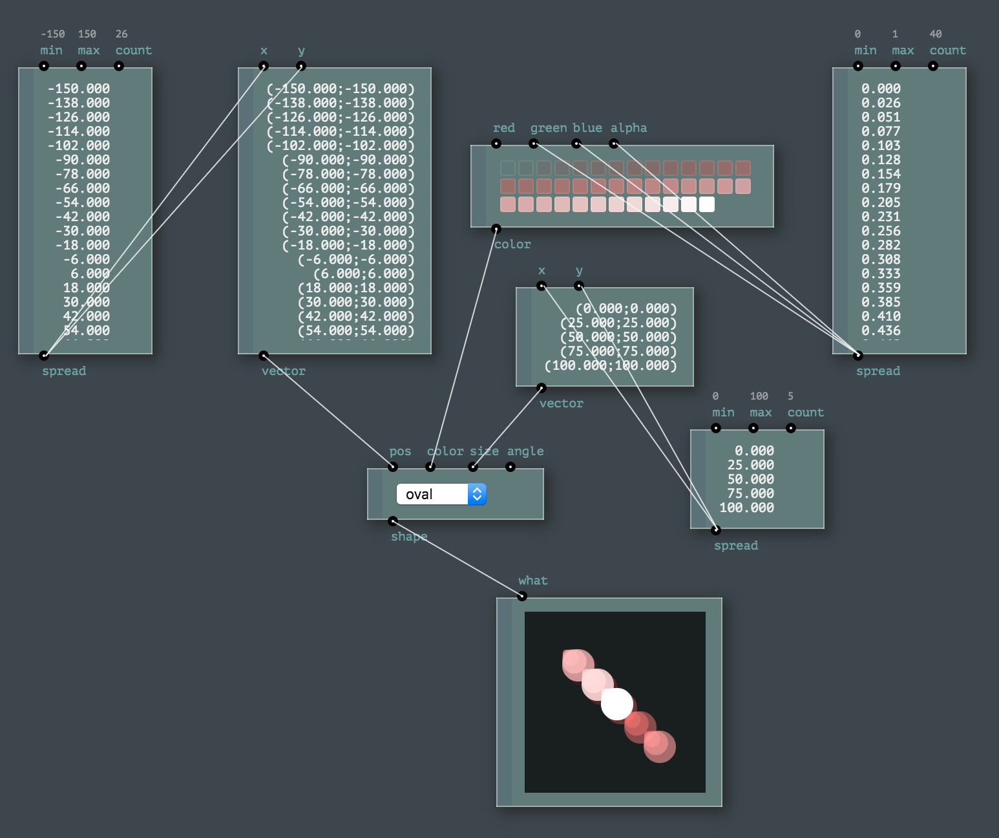
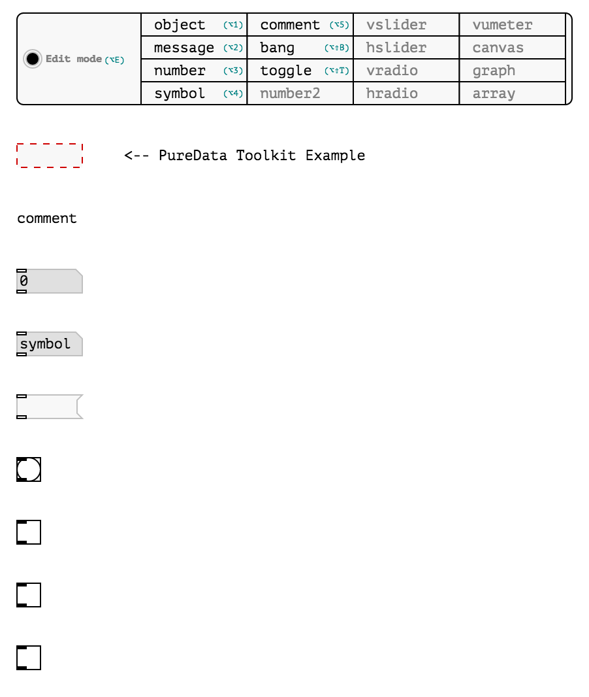
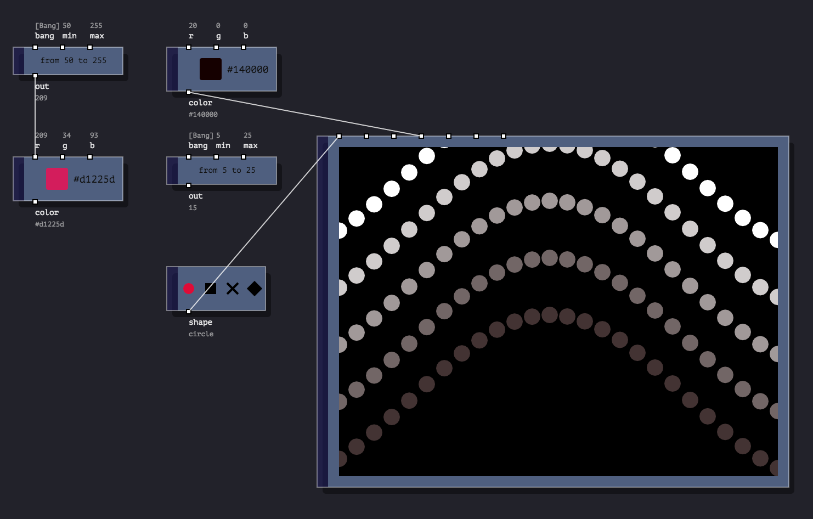
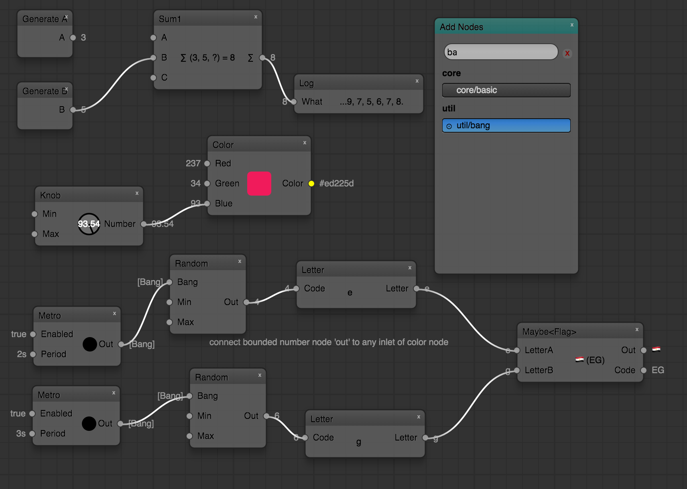
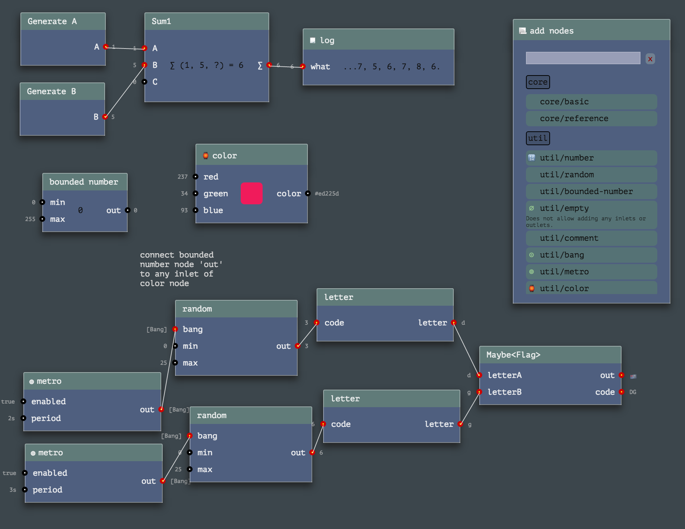

NB: Versions of RPD used in these examples may appear not to be up-to-date, please use the methods described on Setup page to ensure you get the latest one.
- Animatron toolkit,
compactstyle, HTML
- Animatron toolkit,
plainstyle, HTML
- Animatron toolkit,
pdstyle, HTML  - Pure Data toolkit,
webpdstyle, SVG  - Processing toolkit,
compact-vstyle, SVG
- Processing toolkit,
compactstyle, SVG  - Processing toolkit,
plainstyle, SVG
- Processing toolkit,
quartzstyle, HTML
- Timbre toolkit,
quartzstyle, HTML
- Util toolkit,
black-whitestyle, SVG
- Util toolkit,
blenderstyle, SVG  - Util toolkit,
compact-vstyle, SVG
- Util toolkit,
quartzstyle, SVG - Util toolkit,
quartzstyle, HTML 
Videos
Latest Videos from RPD Vimeo Channel: